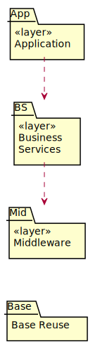

Design Elements¶
Subsystem Context Diagrams¶
Analysis-Class-to-Design-Element Map¶
Analysis Class |
Design Element |
|---|---|
RegistrationForm |
RegistrationForm |
RegistrationController |
RegistrationController |
LoginForm |
LoginForm |
LoginController |
LoginController |
AccountData |
AccountData |
ProposalForm |
ProposalForm |
ProposalController |
ProposalController |
MetadataSystem |
MetadataSystem subsystem |
IMetadataSystem interface |
|
ReviewForm |
ReviewForm |
UpdateController |
UpdateController |
Proposal |
Proposal |
Distributed File System Interface |
DFS subsystem |
IDFS interface |
Design-Element-to-Owning-Package Map¶
Design Element |
“Owning” Package |
|---|---|
RegistrationForm |
Middleware::Authentication |
RegistrationController |
Application::Authentication |
LoginForm |
Middleware::Authentication |
LoginController |
Application::Authentication |
AccountData |
Business Services::Authentication |
ProposalForm |
Middleware::Proposal Management |
ProposalController |
Application::Proposal Management |
MetadataSystem subsystem |
Business Services |
IMetadataSystem interface |
Business Services::Package Index |
ReviewForm |
Middleware::Proposal Management |
UpdateController |
Application::Proposal Management |
Proposal |
Business Services::Proposal Management |
DFS subsystem |
Business Services |
IDFS interface |
Business Services::External System Interfaces |
Architectural Layers and Their Dependencies¶

Layer Descriptions¶
- Application
The Application layer contains application-specific design elements.
- Business Services
The Business Services layer contains business-specific elements that are used in several applications.
- Middleware
Utilities and platform-independent services.